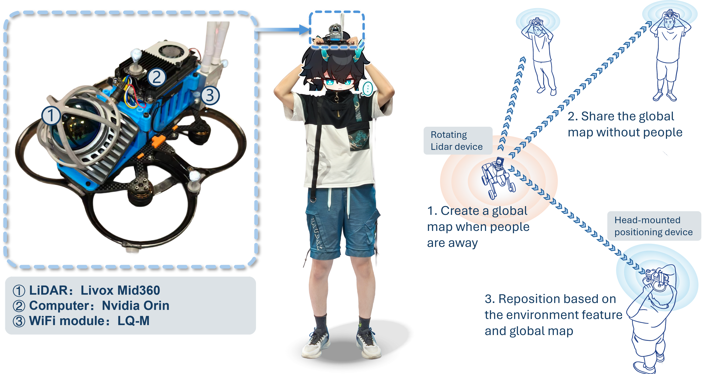

Panoramic 3D perception is crucial for safety monitoring and autonomous operation in industrial scenarios, requiring full-field coverage while maintaining geometric consistency and real-time performance.
S3KF presents a unified panoramic 3D multi-object tracking framework that fuses an electric rotating LiDAR with a four-camera array for synchronous full-surround geometry and appearance perception.
Unlike traditional 2D trackers that suffer from panoramic image projection singularities or 3D trackers relying on redundant Euclidean parameterization, S3KF designs a geometrically consistent state representation on the unit sphere S².
Experiments in controlled and real-world industrial scenes show that the method achieves decimeter-level tracking accuracy, significantly reduces identity switches, and maintains real-time performance on-board, providing a scalable, infrastructure-free solution for industrial safety monitoring and panoramic multi-object tracking.
Research Highlights
360° Panoramic Perception: Novel integration of rotating LiDAR and quad-camera array for full-surround synchronized sensing without blind spots.
Geometrically Consistent Representation: Spherical state model on unit sphere S² eliminates projection singularities and over-parameterization inherent in traditional 2D/3D methods.
Multi-Modal Sensor Fusion: Extended spherical Kalman filter seamlessly fuses visual detection, LiDAR depth, and motion information for robust tracking.
Infrastructure-Free & Real-Time: Achieves decimeter-level accuracy with minimal deployment requirements, suitable for UAVs and ground robots in dynamic environments.
Open-Source Dataset: High-precision ground truth with wearable LiDAR system, enabling reproducible research for panoramic 3D tracking.
Key Features & Contributions
🔧 Panoramic Sensing Hardware
A novel integrated system of rotating LiDAR and quad-camera rig, realizing full panoramic 3D coverage and synchronized multimodal sensing.
🌐 S² Geometric State Representation
2-DOF tangent-plane parameterization on unit sphere, avoiding redundant constraints and enabling unified 2D/3D tracking representation.
📡 Extended Spherical Kalman Filter
Augmented state space with scale/depth and their velocities, enabling principled camera-LiDAR data fusion via an extended spherical Kalman filter.
📊 Infrastructure-Free GT Acquisition
Novel 3D trajectory GT method with wearable LiDAR, releasing an open-source dataset with synchronized multimodal data and high-precision GT.
System Overview
Hardware Setup: Rotating Livox Mid360 LiDAR + 4-channel fisheye camera array + embedded computing unit.
The system supports 360° panoramic sensing and can be mounted on UAVs, quadruped robots, and mobile platforms for infrastructure-free multi-object tracking.
GROUND TRUTH GENERATION FOR 3D TRACKING
A. Hardware and System Configuration
Our infrastructure-free mobile localization system integrates LiDAR sensors and computing units worn on the head. All devices connect via WiFi to maintain synchronized time and spatial references, enabling rapid deployment across multiple platforms without pre-deployed base stations.
B. 3D Tracking Ground-truth Generation
We construct a unified global coordinate frame from a high-quality LiDAR point cloud map using LiDAR-inertial odometry. Wearable devices localize by registering their real-time LiDAR scans to this map, achieving centimeter-level accuracy (within 3 cm). This eliminates inter-device calibration and avoids cumulative drift during experiments, enabling scalable multi-person trajectory acquisition.

Real-world Experiments
Panoramic 3D Tracking: S3KF is validated in indoor, outdoor, dynamic and complex environments.
It achieves centimeter-to-decimeter localization accuracy and drastically reduces ID switches compared with 2D trackers like ByteTrack.
Field Testing Results
Indoor Environment with Dog platforms
Indoor Environment with Drone platforms
Outdoor Environment with Dog platforms
Outdoor Environment with Drone platforms
Conclusion
S3KF provides a unified framework for panoramic 3D multi-object tracking by introducing spherical geometry and multi-modal fusion.
It effectively addresses projection distortion, state redundancy, and unstable filtering in traditional methods, enabling robust, real-time, infrastructure-free panoramic perception for robotics and industrial applications.